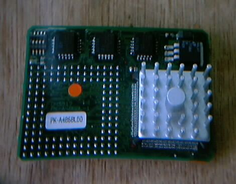
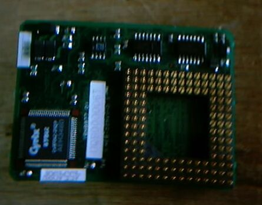
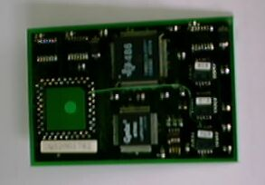
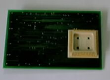

PC98用CPUアクセラレータ
CPUアクセラレータPK-A486BL60

上の写真には486のヒートシンクが見える。下側、 裏面には、386のソケットに差し込むピンと、Cyrixの870DLCが付いている。 
この98RSには、アイオーデータ製のCPUアクセラレータ、PK-A486BL60が入っています。386のソケットに差し込むタイプで、3倍速の486の性能が得られるというものです。チップは、IBMのBLUE
LIGHTNING を使っています。この当時は、今でも活躍しているメルコやアイオーデータの他にも、いくつもの会社が PC98用のCPUアクセラレータを開発、販売しており、私のようなハードウエアが好きな者には、最近のMACでのG３、G4カードの開発競争と同じように、大変興味をそそられるものです。PC98は、DOS/V機のように、より高性能にするために、どんどん改造、アップグレードができるマシンではないため、与えられた制約のなかで、少しでも性能を上げようとした努力が、目に見えるようです。
286用アクセラレータ


これは、286マシンのためのアクセラレータで写真は、ピンぼけでよく見えませんが、、TEXAS-InstrumentsのTX486SLCとCyricsの875SLC（FPU）が使われています。右側は裏面で、286のソケットにうまくはまるようにできています。
RSのCPUボードについて

最近になって気が付いたのですが、PC9801RSのCPUは元々386SXで、その386SXはプリント基板にハンダ付け されており、PK-A486BL60は取り付けられないはずです。ここに一つのミステリーがあります。私の9801RS
のCPUボード（写真）は元からのボードではなく、入れ替えられているということです。多分9801RAのボード ではないかと考えています。（2002/7/3記）
PC9801のページに戻る